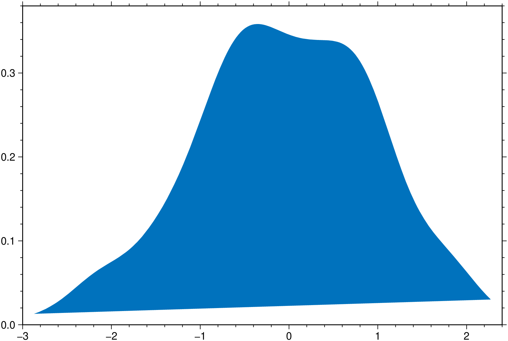
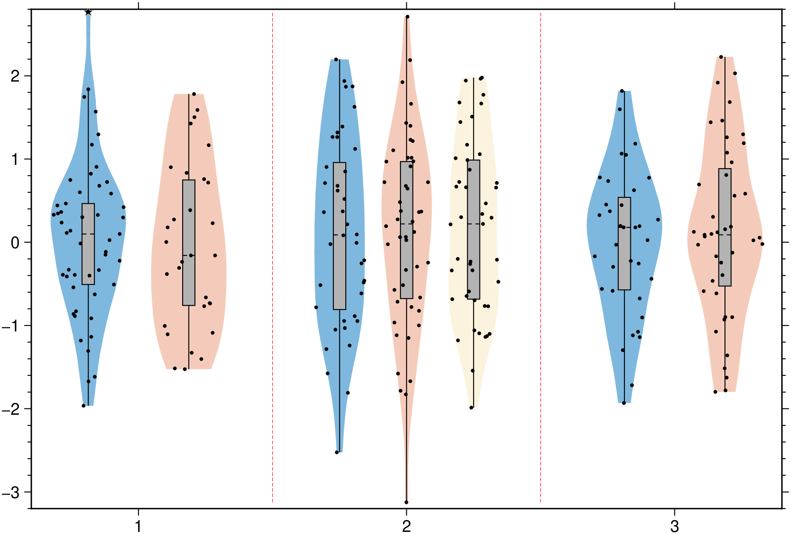
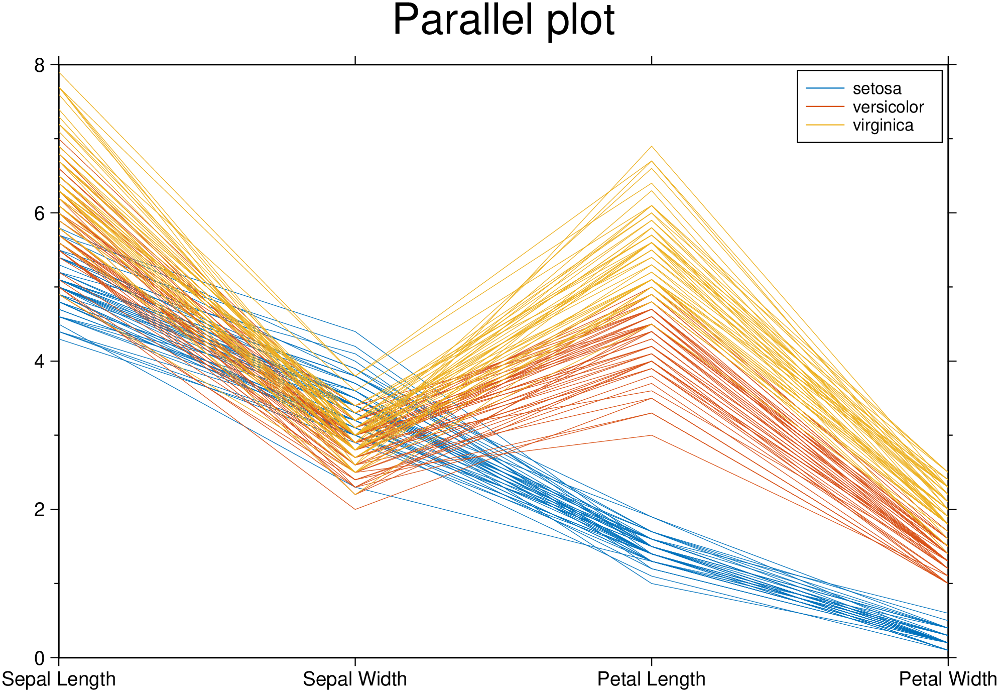
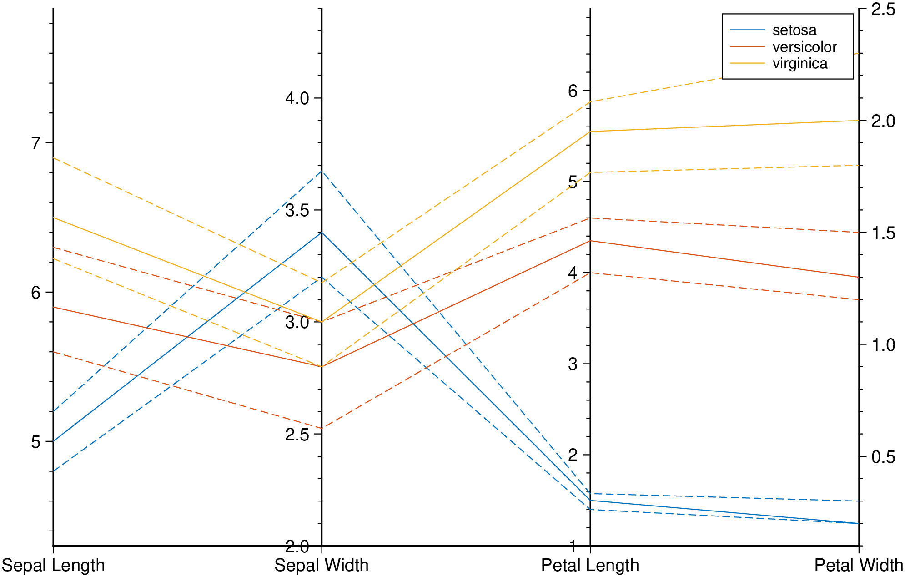
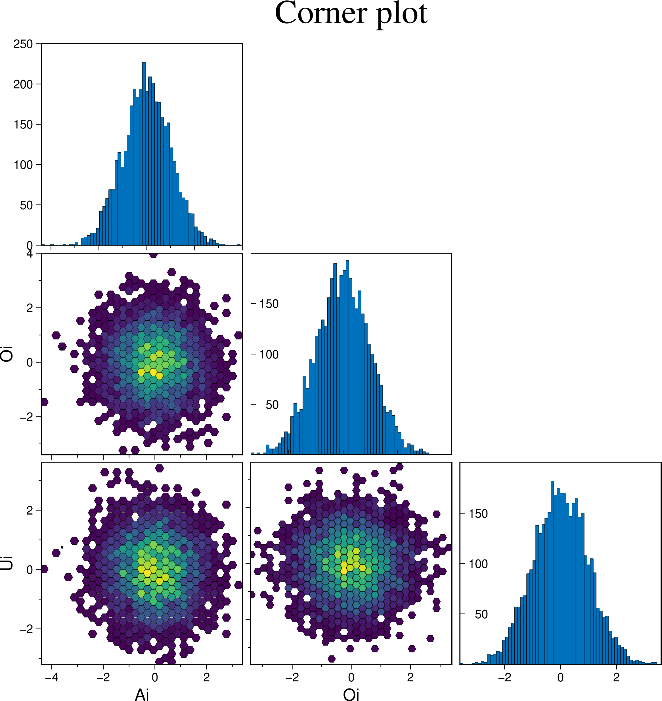
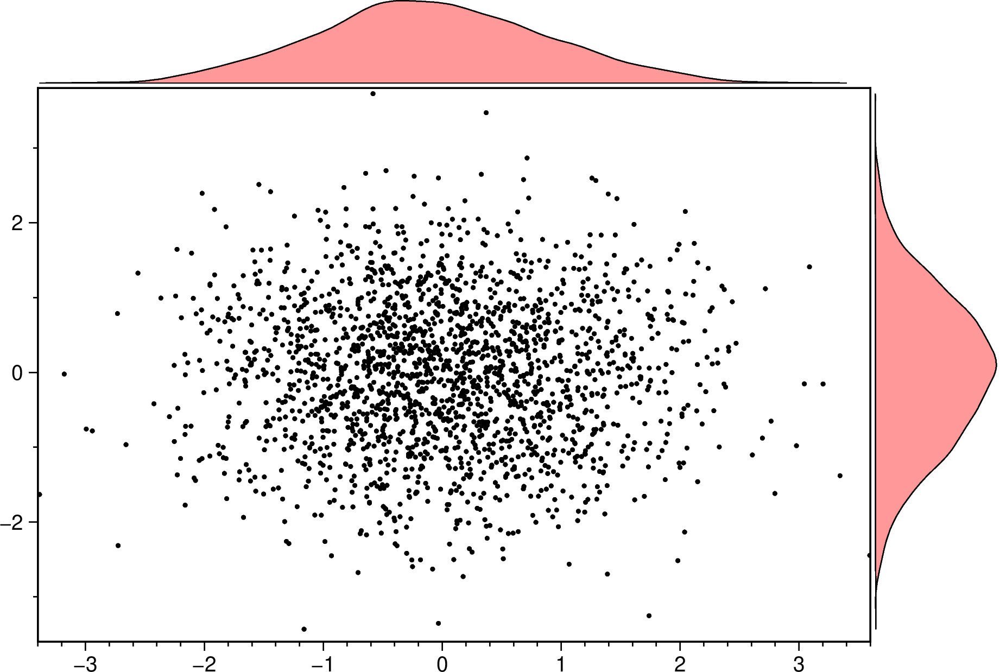
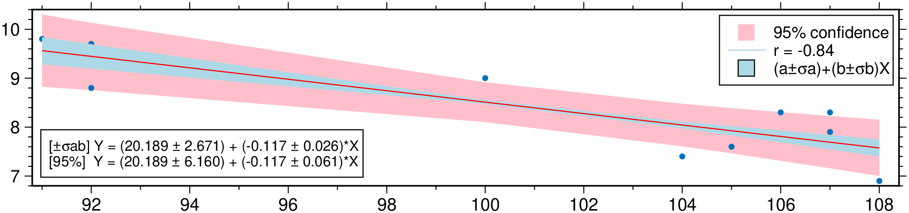
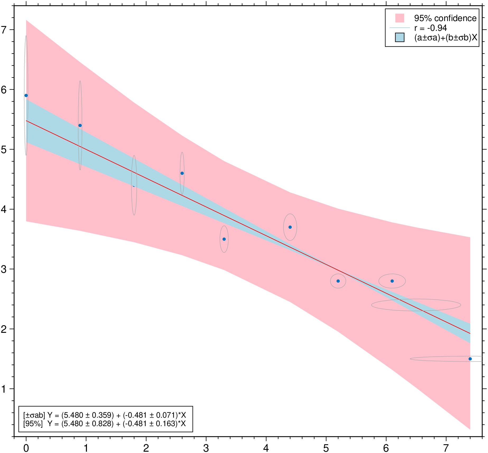

using GMT
density(randn(200), fill=true, show=true)
Expand the density profile with 4 x the set bandwidth, such that it decays to zero. By lowering the bandwidth we forcing the line to be less smoth.
An horizontal boxplot with default colors, displaying outliers as 6p black stars. Noches are also shown but this requires GMT6.5.
A plot of three groups of two elements each and where we assign the same color to the elements of each group.
Create a plot with 8 violins colored with the default colors.
Now add boxplot, scatter and outliers to a plot similar to above. The outliers show as black stars with a fait gray outline.
And a group example with red dashed separator lines and variable level of transparency for each element in the group. Note that this case uses input data as a Vector{Vector{Vector}}, which more representative of a real case as each violin is allowed to be made of a different number of observations.

Join the left and right halves of each of the two element in the group.
Test if x and y follow the same distribution.
Test if x is normally distributed. the :fitrobust default line passes through the 1st and 3rd quartiles of the distribution
See docs in parallelplot
Create a parallel plot using the measurement data in iris.dat. Use a different color for each group as identified in species, and label the horizontal axis using the variable names.

Plot only the median, 25 percent, and 75 percent quartile values for each group identified in species. Label the horizontal axis using the variable names.

Plot bands enveloping the +- 25% percentil arround the median.
Create a cornerplot plot with hexagonal bins, setting the color map, the vriable names, plot truth and title.

Example on how to control the symbol types, size and color.
A scatter plot with histograms on the sides
A scatter plot with density curves on the sides

An hexbin scater plot with marginal density plots. Note that we must set aspect=:equal to have that hexbin plot.
Plot a regression fit over a scatter plot (no errors in X nor in Y). Example0 in https://github.com/rafael-guerra-www/LinearFitXYerrors.jl/blob/master/examples/example0.jl

Non-correlated errors in X and in Y Example2 in https://github.com/rafael-guerra-www/LinearFitXYerrors.jl/blob/master/examples/example2.jl
using GMT
D = linearfitxy([0.0, 0.9, 1.8, 2.6, 3.3, 4.4, 5.2, 6.1, 6.5, 7.4],
[5.9, 5.4, 4.4, 4.6, 3.5, 3.7, 2.8, 2.8, 2.4, 1.5],
sx=1 ./ sqrt.([1000., 1000, 500, 800, 200, 80, 60, 20, 1.8, 1]),
sy=1 ./ sqrt.([1., 1.8, 4, 8, 20, 20, 70, 70, 100, 500]));
plot(D, linefit=true, band_ab=true, band_ci=true, ellipses=true, legend=true, show=1)
Condition the regression fit on another variable and represent it using color.